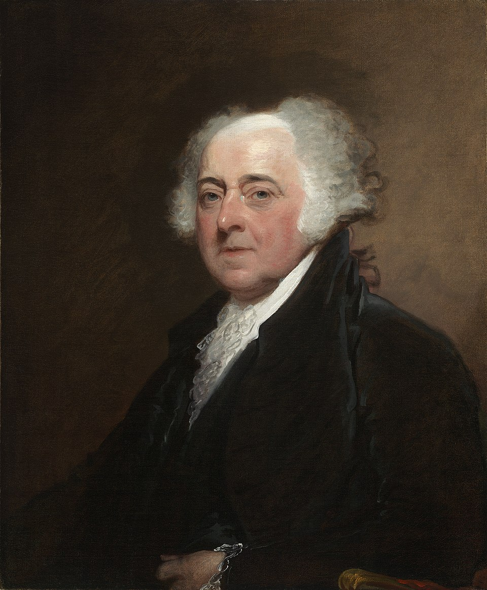
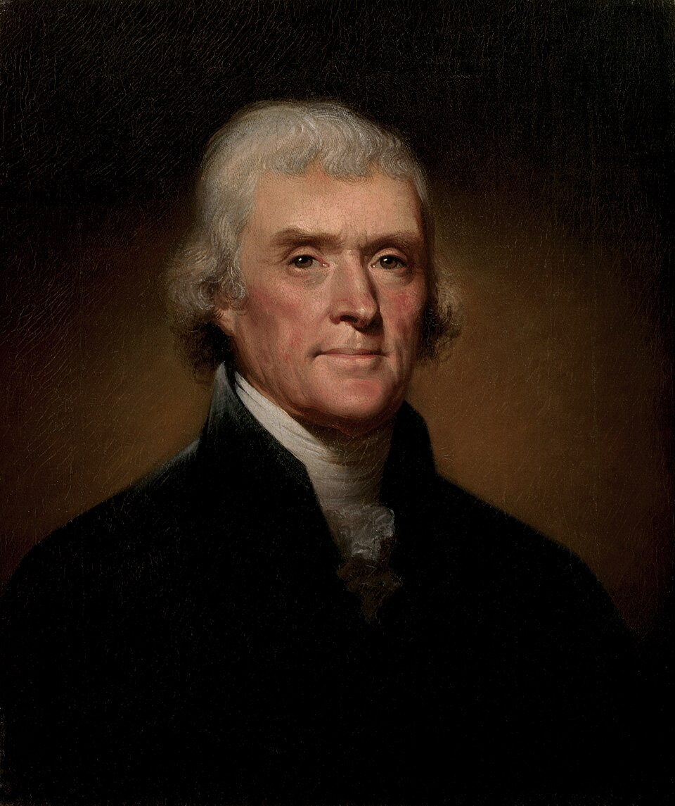
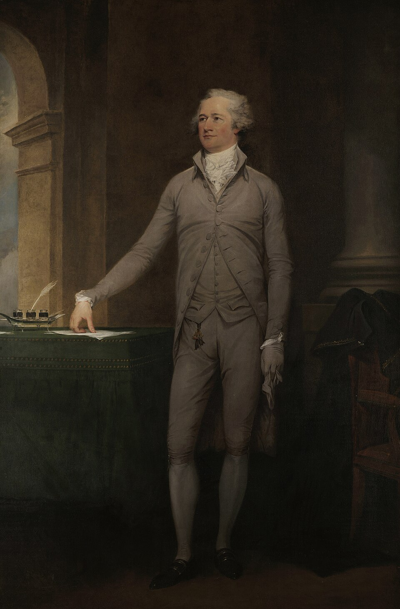
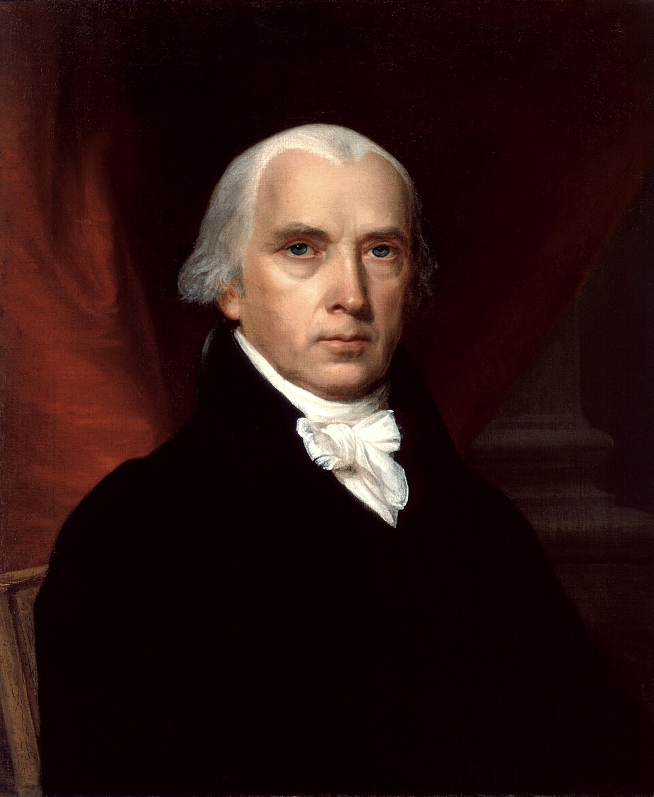
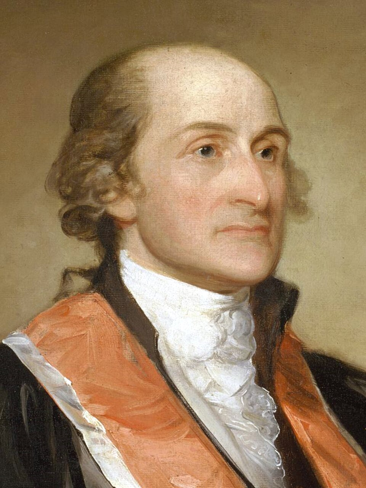

Founding Fathers
שער האבות המייסדים
בחרו דמות כדי להיכנס לדף אישי ומורחב: ביוגרפיה, אטימולוגיה, ילדות, משפחה, השכלה, תרומה היסטורית ומורשת.

ג'ורג' וושינגטון
המפקד העליון ומעצב מוסד הנשיאות.
Wikimedia Commons · Public Domain · Gilbert Stuart

ג'ון אדמס
משפטן, דיפלומט וקול מרכזי לעצמאות.
Wikimedia Commons · Public Domain · Gilbert Stuart

תומאס ג'פרסון
הפילוסוף של המהפכה והנשיא השלישי.
Wikimedia Commons · Public Domain · Rembrandt Peale

בנימין פרנקלין
איש אשכולות והדיפלומט שהשיג את ברית צרפת.
Wikimedia Commons · Public Domain · Joseph Siffrein Duplessis

אלכסנדר המילטון
אדריכל הכלכלה הפדרלית וכתבי הפדרליסט.
Wikimedia Commons · Public Domain · John Trumbull

ג'יימס מדיסון
ממעצבי החוקה ומגילת הזכויות.
Wikimedia Commons · Public Domain · Gilbert Stuart

ג'ון ג'יי
משפטן ודיפלומט מרכזי ברפובליקה החדשה.
Wikimedia Commons · Public Domain · Gilbert Stuart

סמואל אדמס
ממארגני ההתנגדות הבריטית בבוסטון.
Wikimedia Commons · Public Domain · John Singleton Copley
המשך עבודה
הדפים האישיים נוצרו כשלד מקצועי ראשוני. בשלב הבא אפשר להרחיב כל דמות לפי התבנית המלאה: אטימולוגיה מעמיקה, ילדות, משפחה, השכלה, מקורות ותמונות נוספות.